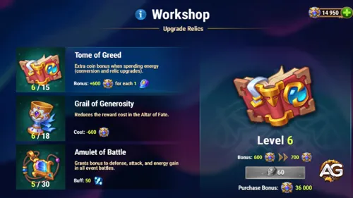

O tão aguardado Evento Dilúvio finalmente chegou em Hero Wars Dominion Era, trazendo um novo herói poderoso, missões empolgantes e recompensas valiosas.
Para muitos jogadores, a maior dúvida é: jogadores free-to-play conseguem desbloquear Dilúvio com seis estrelas durante o evento?
A resposta é sim, mas isso exige planejamento cuidadoso, gerenciamento inteligente de recursos e a priorização das mecânicas corretas do evento.
Neste guia, vamos explicar como o evento funciona, as melhores estratégias para maximizar as recompensas e o passo a passo para desbloquear Dilúvio com seis estrelas, mesmo se você for um jogador free-to-play.
Como Funciona o Evento Dilúvio
O Evento Dilúvio é dividido em vários tipos de missões e mecânicas que recompensam você com moedas do evento, cristais e recursos.
Para desbloquear Dilúvio, você precisa entender como progredir de forma eficiente.
As missões do evento são sua principal fonte de Cristais de Energia e Moedas de Valor.
Elas incluem tarefas como farmar missões da campanha, evoluir heróis, gastar energia e completar atividades no jogo.
Essas missões são divididas em Etapa 1 e Etapa 2, ambas gratuitas.
Jogadores free-to-play devem focar em concluir todas as missões disponÁveis nessas duas primeiras etapas antes de se preocupar com objetivos premium.
Missões de Herói
Dentro do evento, você encontrará missões especÁficas de herói, como evoluir Ishmael ou outros heróis designados para nÁveis de estrela mais altos.
Cada missão concluÁda concede recompensas adicionais e ajuda a desbloquear mais marcos do evento.
Como essas missões podem ser repetidas após completadas uma vez, refaça-as até concluir todas as evoluções disponÁveis.
Priorizar as missões de herói cedo acelera seu progresso no evento e libera recompensas de nÁveis mais altos mais rápido.
Moedas de Valor e Cristais de Energia
As Moedas de Valor são usadas no Altar do Destino, onde você as troca por Pedras da Alma e outras recompensas.
Os Cristais de Energia são necessários para progredir no Workshop do Evento, onde você melhora grimórios e amuletos especiais para aumentar sua eficiência de farm.
Gerenciar bem essas duas moedas é essencial para alcançar seis estrelas em Dilúvio.
Gaste Moedas de Valor principalmente em giros do Altar que visam as Pedras da Alma de Dilúvio, e use Cristais de Energia para melhorar o Workshop, reduzindo custos e aumentando os ganhos.
O Workshop do Evento: Quais Melhorias Priorizar
O Workshop é a espinha dorsal do evento.
Nele, você encontra três melhorias principais: o Tomo da Ganância, o Tomo da Generosidade e o Amuleto da Batalha.
O Tomo da Ganância deve ser sempre sua primeira prioridade.
Ao melhorá-lo, você reduz custos e aumenta as recompensas extras ao gastar energia, converter recursos ou evoluir relÁquias.
Em nÁveis mais altos, ele melhora drasticamente sua eficiência de farm.
O Tomo da Generosidade é sua segunda prioridade, pois aumenta as conversões de Pedras da Alma, garantindo mais Pedras da Alma de Dilúvio com o tempo.
O Amuleto da Batalha é o último da lista — útil para batalhas, mas menos importante que manter um fluxo constante de Pedras da Alma e moedas.

Oficina do Evento Cascata, Hero Wars Dominion Era.
Dica de Estratégia: Maximize o Tomo da Ganância Primeiro
Sempre maximize o Tomo da Ganância primeiro.
Mesmo no nÁvel 1 ele já reduz bastante seus custos, mas no nÁvel 6 os retornos são transformadores.
O custo menor por giro no altar e o aumento de energia retornada permitem mais giros com o mesmo investimento de recursos, o que se traduz diretamente em mais Pedras da Alma de Dilúvio.
Priorizar esse tomo acelera todas as partes do seu progresso no evento.
O Altar do Destino e o Farm de Pedras da Alma
O Altar do Destino é onde a maioria das suas Moedas de Valor será gasta.
Cada giro oferece chance de ganhar Pedras da Alma de Dilúvio, além de outras recompensas.
Sempre abra em lotes de 10 para maximizar a eficiência.
Quanto maiores as melhorias do Workshop, menor o custo por giro de 10x, facilitando o farm de Pedras da Alma.
Em média, cada giro de 10x concede entre 36 e 40 Pedras da Alma de Dilúvio.
Como são necessárias 630 Pedras da Alma para desbloquear Dilúvio com seis estrelas, gastar de forma eficiente aqui é crucial.
Guarde suas moedas para giros múltiplos e evite giros únicos, a menos que busque um item especÁfico da loja.
Caminho Free-to-Play para Seis Estrelas
Aqui está como um jogador free-to-play pode realisticamente alcançar seis estrelas:
conclua todas as missões gratuitas das Etapas 1 e 2;
foco inicial nas missões de herói, repetindo até concluir todos os requisitos;
evolua o Tomo da Ganância primeiro até pelo menos o nÁvel 6;
use Moedas de Valor no Altar do Destino em lotes de 10 giros;
priorize as Pedras da Alma de Dilúvio em vez de itens vermelhos ou outras recompensas;
e guarde energia extra para missões diárias que continuam gerando moedas do evento.
Com esse método, pode ser que você não consiga tudo de imediato, mas ao final do evento é totalmente possÁvel chegar à s seis estrelas sem gastar dinheiro.
Passe de Batalha: Vale a Pena Comprar?
O Passe de Batalha deste evento custa cerca de US$30 (≈R$150).
Aqui está o que você recebe: 20.000 Esmeraldas imediatas (que já equivalem ao valor do passe na loja comum), uma skin exclusiva do evento de Dilúvio, além de Pedras da Alma extras, cristais e recursos.
Embora a skin não seja essencial — Dilúvio ainda tem ótimo desempenho sem ela — o verdadeiro valor está nas Esmeraldas e recursos bônus.
Se você é free-to-play e quer permanecer assim, pule o passe.
Se não se importa em gastar um pouco, o passe é uma das compras de melhor custo-benefÁcio para progredir no evento.
Papel de Dilúvio nas Composições de Equipe
Como herói mágico, Dilúvio se encaixa perfeitamente em equipes centradas em magos.
Sua habilidade Marca da Água tem sinergia incrÁvel com Krista e Lars, ampliando o controle e o dano explosivo.
Times que utilizam marcadores, deslocamentos e dano mágico em área se beneficiam mais do kit de Dilúvio.
Exemplos recomendados de equipe: Dilúvio + Krista + Lars + Celeste + Martha, ou Dilúvio + Aurora + Orion + Helios + Martha.
Sua capacidade de aplicar Marcas e aumentar o dano mágico faz dele uma excelente escolha contra equipes inimigas focadas em dano fÁsico e um núcleo sólido para estratégias de controle e explosão.
O que Comprar na Loja do Evento
A loja do evento oferece vários itens, mas nem todos valem sua moeda.
Aqui está a lista de prioridades: Pedras da Alma de Dilúvio devem ser sempre o foco principal.
Depois, energia de mascotes e pedras de skin são ótimas para progressão de longo prazo.
Pedras da Alma de outros heróis (como Julius, Polaris, Aidan, etc.) são úteis se você não tiver heróis raros, mas são secundárias.
Totens e materiais de evolução são opcionais, dependendo do seu progresso atual.
Evite desperdiçar moedas em consumÁveis como poções de energia ou itens comuns que você pode farmar naturalmente.
Priorize sempre compras que aproximem você das 630 Pedras da Alma.
Erros a Evitar
Não gaste cedo em poções de energia ou consumÁveis de baixo valor da loja.
Eles parecem úteis no curto prazo, mas custam recursos que poderiam ser usados em giros no Altar.
Não priorize itens vermelhos em vez de Pedras da Alma se seu objetivo principal for desbloquear Dilúvio.
Recompensas de nÁvel vermelho são chamativas, mas não necessárias para chegar à s seis estrelas.
E não ignore o progresso no Workshop — melhorar os tomos cedo é a forma mais barata de aumentar seus ganhos a longo prazo.
Considerações Finais
O Evento Dilúvio em Hero Wars Dominion Era é um dos mais recompensadores, tanto para quem gasta quanto para free-to-play, desde que abordado estrategicamente.
Priorize as missões e as melhorias do Tomo da Ganância.
Foque seus recursos em desbloquear as Pedras da Alma de Dilúvio.
Use o Altar do Destino com sabedoria, sempre em lotes de 10 giros.
Lembre-se: a skin do evento é bacana, mas não essencial — alcançar seis estrelas em Dilúvio deve ser sua meta principal.
Dilúvio é uma adição poderosa às equipes de magos e terá impacto duradouro no meta do jogo, especialmente em conjunto com Krista e Lars.
Com paciência e planejamento, você não só desbloqueará Dilúvio como também fortalecerá bastante todo o seu elenco.
Conclusão
Sim, jogadores free-to-play podem desbloquear Dilúvio com seis estrelas.
Isso exige disciplina, melhorias inteligentes e priorizar Pedras da Alma em vez de itens chamativos, mas é totalmente alcançável.
Siga este guia para maximizar sua eficiência no evento e foque nos núcleos que mais trazem progresso: o Workshop, o Altar e as missões do evento.
Boa sorte e divirta-se jogando com Dilúvio nas suas formações do Dominion Era!